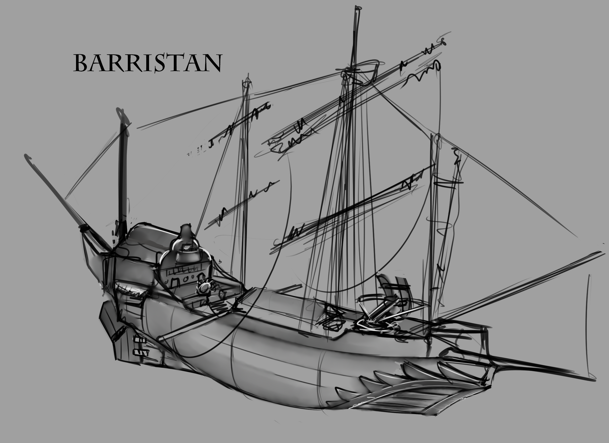

To poor Glints chagrin i turned her down on the evening service. I have more important work to do then to pretend to listen to supposed ancient scriptures.
Besides, the small hold they keep the services are stuffy at best. There's not a lot of room in the hold of this frigate for larger gatherings.
I took some time in studying the capabilities of The Attentive. Its an interesting ship, very different from my old 2nd generation Schooner 'Barristan' which i stubbornly stuck with over the years. These "Frigates" are built for endurance and speed, an odd mix considering the extra weight usually needed to make her tough.
But the shipbuilders have employed tricks of engineering that are both admirable and grating. The thick hull holds metal plates in its center, sandwiched between the wood. This makes us extra heavy in the water and along with the ship being long and thin makes us cut through waves and give us a high speed. The downside however is slower maneuverability and tighter compartments down below with reduced cargo hold for supplies.
The Attentive is like a raptor that will spot prey and give fast chase. Catching its prey in speedy sustained chase. Two ballistae can be assembled and mounted in the fore and aft sections. They are not heavy enough to pierce hull except on lighter ships, but can be used to cripple a ship or harass enemy crew.
Fluff help me if our target is both fast and maneuverable however, it feels like my old Barristan could have easily out-danced this ship if the initial charge would to fail. I suppose thats were the toughness comes in. While two Ballistae can be provide fire they can also be used to fire hooks to pull us closer for boarding action, which will be a vital weapon for success for this ship.
